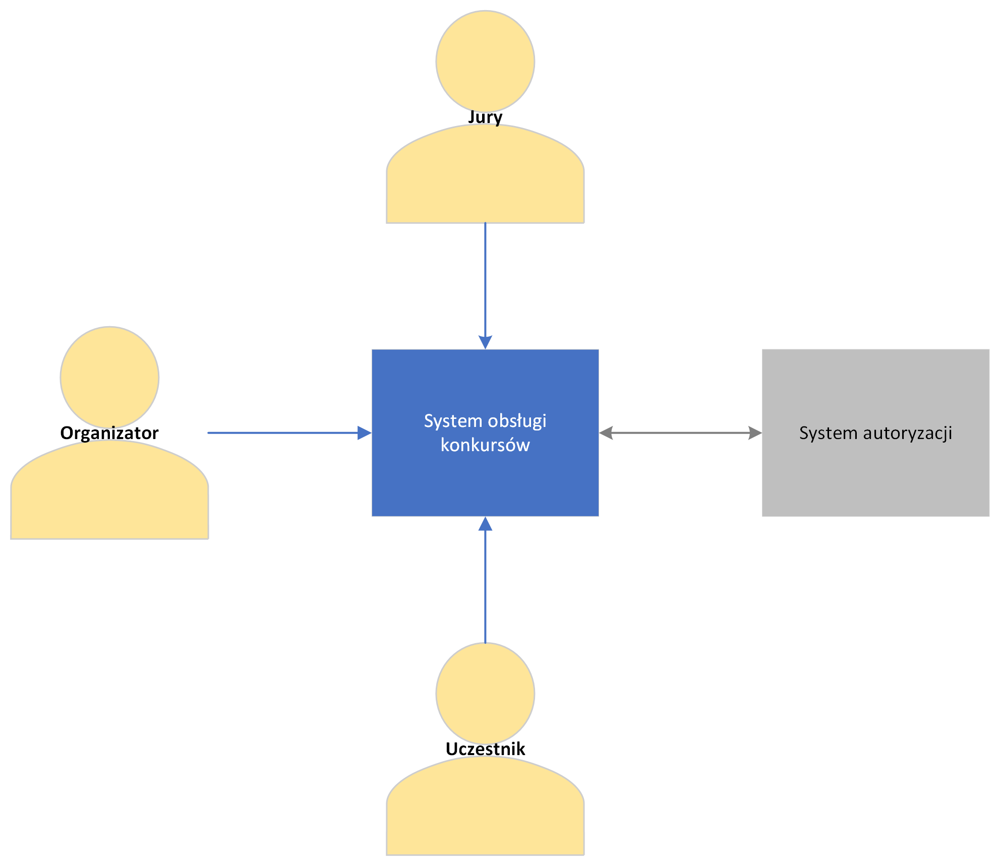
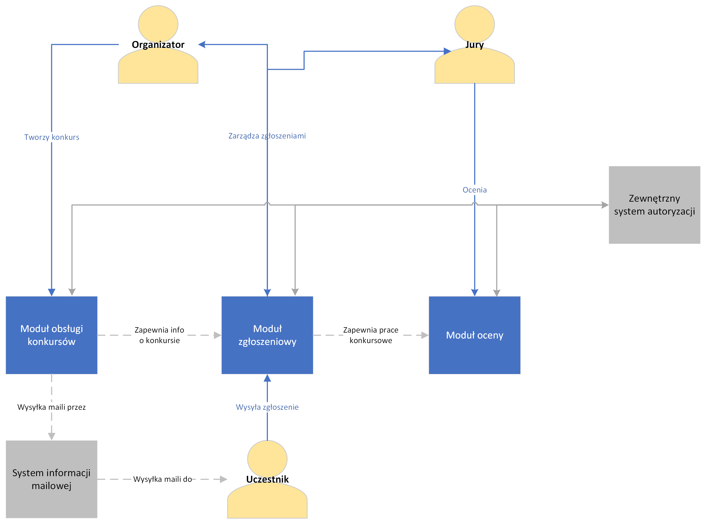
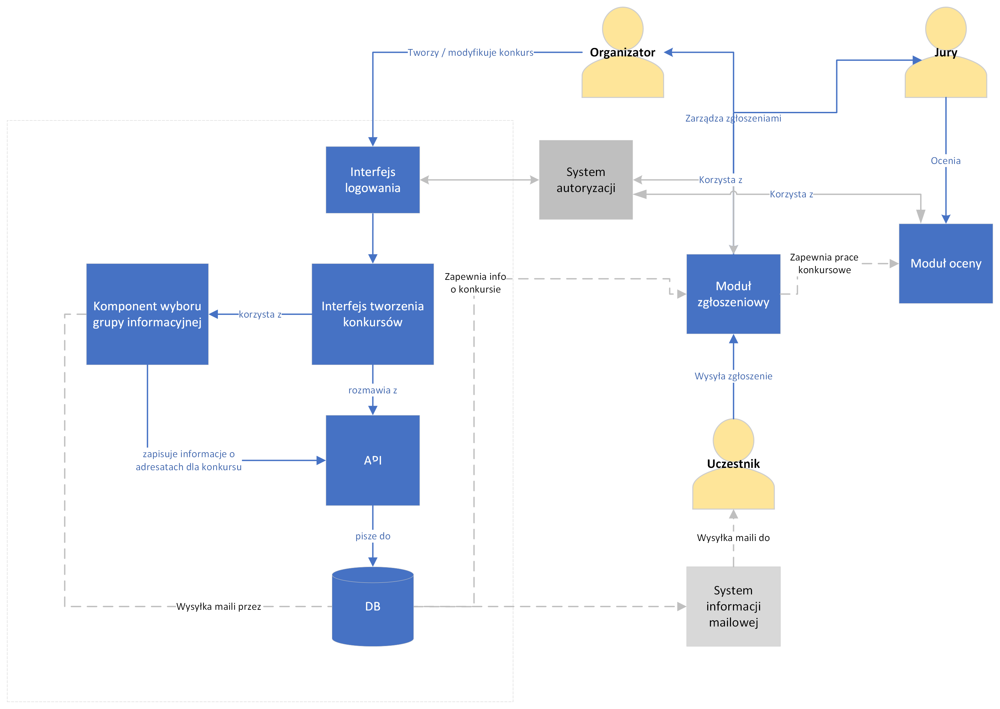
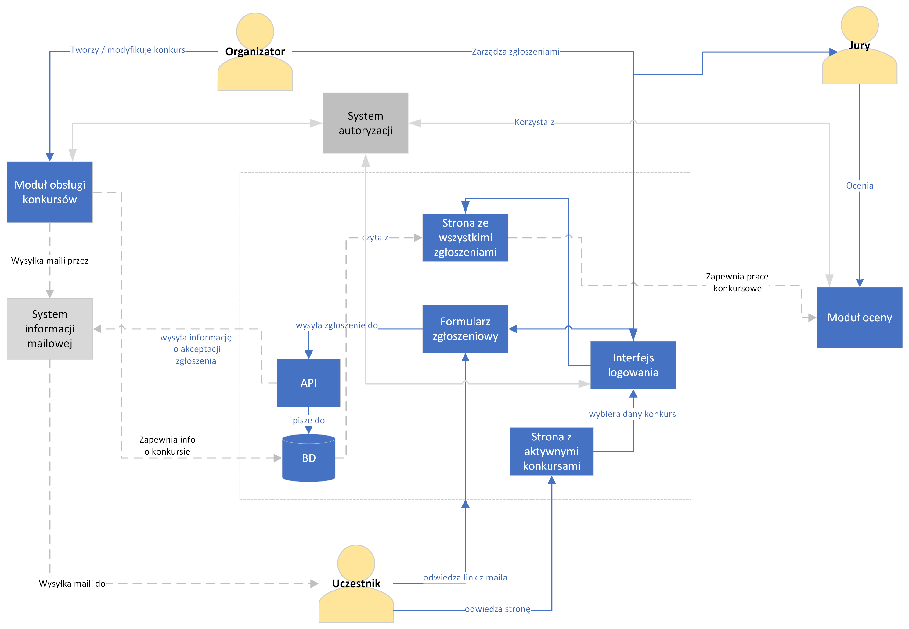
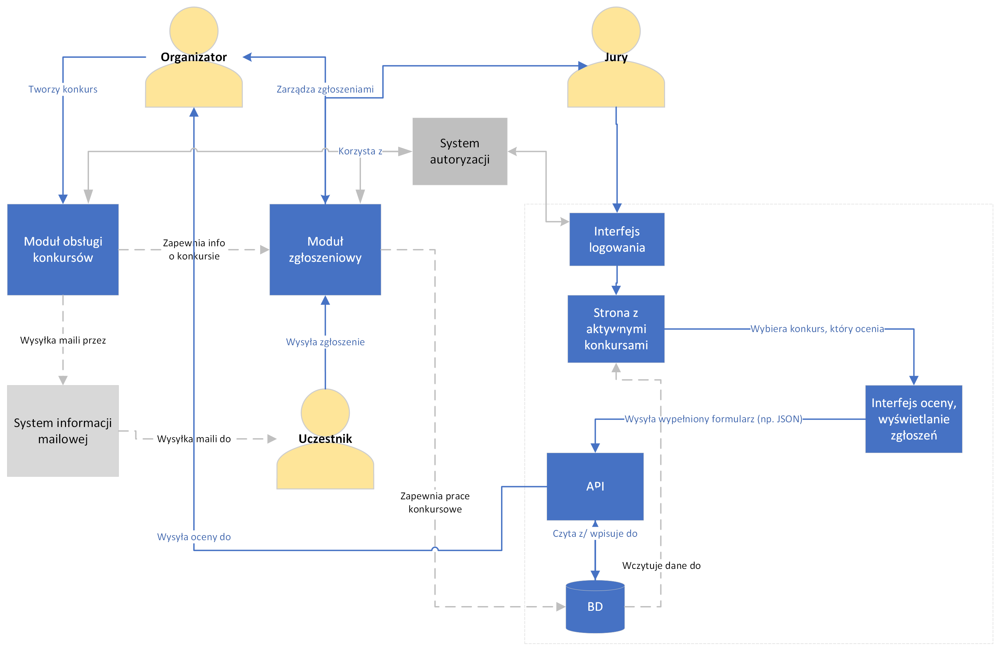
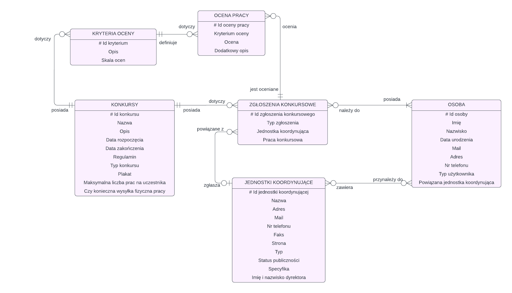
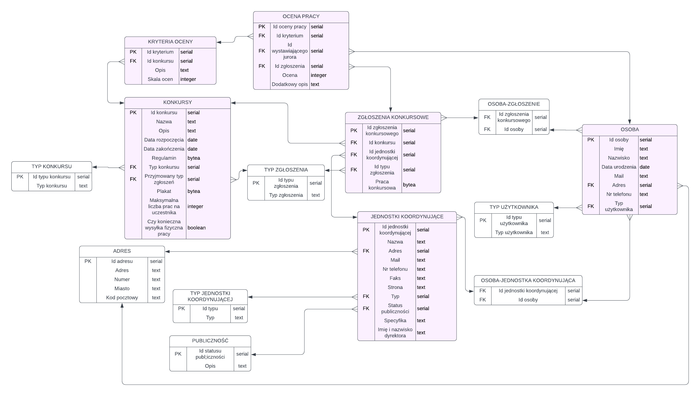

Architektura¶
Model C4 Model C4 pozwala na wizualizację architektury na wielu poziomach abstrakcji projektu, ułatwiając pracę nad nim, co jest bardzo pomocne. W związku z tym postanowiliśmy oprzeć projektowanie architektury na właśnie tej metodyce.
Context Poziom kontekstowy pozwala na zobrazowanie położenia systemu w otoczeniu aktorów, którzy wchodzą z nim w interakcję. Na poniższym diagramie widać trzech aktorów systemu: Organizatorów, Jury i Uczestników. Każdy z nich korzysta z naszego systemu. Wyszczególniony jest także system autoryzacji, umożliwiający logowanie się do/rejestrację kont na platformie.
Containers Kontenery obrazują wstępny podział architektury naszego systemu na osobne podzespoły. Wyszczególniamy trzy oddzielne moduły: “Moduł obsługi konkursów”, “Moduł zgłoszeniowy” oraz “Moduł oceny”. Dodatkowo korzystamy z zewnętrznego systemu mailingowego, oraz jak wyżej, systemu autoryzacji.
Components Poziom komponentów wskazuje na indywidualne zadania każdego z modułów systemu, a także daje bardziej szczegółowy wgląd na ich implementację. Moduł obsługi konkursów odpowiada za kwestie związane z tworzeniem i edytowaniem danych danego konkursu. Wewnątrz modułu wyszczególniony jest interfejs logowania, komunikujący się z zewnętrznym systemem autoryzacji, oraz interfejs tworzenia konkursów, który to jest swego rodzaju “sercem” tego podzespołu projektu. Istnieje również komponent wyboru grupy informacyjnej. Wspomaga on organizatora w dobraniu odpowiedniej grupy docelowej dla danego konkursu, która zostanie poinformowana o konkursie. Komponenty komunikują się z bazą danych za pomocą specjalnego API, wspólnego dla wszystkich kontenerów.
Moduł zgłoszeniowy obsługuje zgłoszenia Uczestników do konkursów. Oprócz interfejsu logowania oraz API bazy danych, jego kluczowym komponentem jest formularz zgłoszeniowy. Pozwala on zalogowanym użytkownikom na zgłaszanie wykonanych prac do aktualnie trwających konkursów. Do tego komponentu można dostać się poprzez wybór konkursu ze “Strony z aktywnymi konkursami”. Natomiast po rejestracji zgłoszenia, można je wyświetlać korzystając ze “Strony ze wszystkimi zgłoszeniami”.
Moduł oceny umożliwia Jury przeglądanie i ocenianie zgłoszonych przez Uczestników prac konkursowych. W tym celu, podobnie jak w Module zgłoszeniowym, Jury korzysta ze “Strony z aktywnymi konkursami”, która przekierowuje ich do “Interfejsu oceny i wyświetlania zgłoszeń”. Ten komponent odpowiedzialny jest za poprawne przeprowadzenie operacji czytania i wystawiania ocen do bazy zgłoszeniowej. Oprócz tego, moduł korzysta również z interfejsu logowania oraz API bazy danych (tak, jak reszta modułów).
Model ER bazy danych
Model logiczny bazy danych
Encja „zgłoszenie konkursowe” jest odpowiednikiem przesłanego formularza przez osobę chętną do wzięcia udziału w konkursie. Zakładamy możliwość organizowania konkursów grupowych (oznaczone w polu „typ zgłoszenia”), zatem jeden konkurs może być powiązany z kilkoma osobami. Dodatkowo, zgłoszenie może być powiązane z pewną jednostką koordynującą (np. szkołą). Opcjonalne jest też pole „Praca konkursowa” - może zostać przesłany plik JPG, PDF, etc., który zawierałby zgłoszoną pracę. Jeśli pole nie zostanie wypełnione, oczekujemy wysyłki pracy pocztą do siedziby fundacji BoWarto.
Encja „konkursy” jest użyta do definiowania konkursu. Definiuje nazwę, opis, harmonogram, typ konkursu (np. plastyczny, literacki, filmowy etc.), przyjmowane typy zgłoszeń (grupowe, indywidualne). Zawiera również plik z regulaminem w formacie PDF oraz plakat w formacie PNG.
Do każdego konkursu przypisane są pewne kryteria oceny (encja „kryteria oceny”), które zostaną wykorzystane przez jury w procesie poszukiwania zwycięzcy konkursu. Ocena pojedynczego zgłoszenia składa się z wydania oceny przez jury w każdym kryterium zdefiniowanym dla konkursu. Zakładamy, że są konkursy, w których jury składa się z wielu osób i wówczas każdy juror wystawi swoją ocenę (oceny będą przypisane do jurora przez pole „id wystawiającego jurora”). Te oceny znajdują się w tabeli „ocena pracy”.
„Osoba” jest encją zawierającą dane na temat osób interagujących z naszym systemem. Zgodnie z typem użytkownika może to być: organizator konkursu, juror, osoba zgłaszająca prace z ramienia jednostki koordynującej, osoba zgłaszająca prace indywidualnie.
„Jednostki koordynujące” są zbiorem placówek (szkoły podstawowe, licea, kuratoria etc.) do których będą wysyłane powiadomienia mailowe w związku z utworzeniem nowego konkursu.